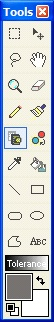

The Clone Stamp Tool (Tools -->Clone Stamp) clones regions between layers or on a single layer. In the picture below, the user is copying the laptop on the left to the right. This tool is especially helpful for removing minor defects in a picture, as shown in the example on the bottom.To use the clone stamp tool, you must first set an anchor point. The anchor point will be where the image is copied from. To set the anchor point, hold ctrl and left click. In order to place the pixels from the anchor point, left click. You can adjust the size of the brush in order to get the results you want.
Here the user is copying a laptop. The source is
indicated by the circle on the left hand side, while the destination is
indicated on the right by the plus cursor.

In this picture, a nearby patch of grass was used to remove the stump in the bottom right.